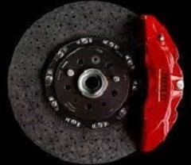
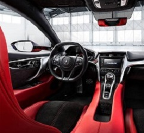
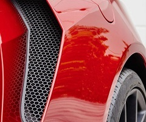

The highest-performing production
NSX ever features 600-HP

Lightweight package featuring
carbon-ceramic brakes

Every detail of the NSX Type S
interior strengthens the connection
between driver and machine

Combines an aggressive design and
aerodynamic components